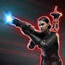
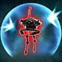

Iden Versio
Tenacious Empire Attacker who expertly takes out foes while supporting her squad
Tenacious Empire Attacker who expertly takes out foes while supporting her squad
Deal Physical damage to target enemy. If no other allies have the Leader tag, Iden deals damage two more times. For each critical hit, Iden recovers 5% Health and Protection.

Deal Physical damage to all enemies and inflict Vulnerable for 2 turns. Dispel all buffs on target enemy and inflict Healing Immunity for 2 turns and Stun for 1 turn. These effects can't be resisted by Rebel enemies. If no other allies have the Leader tag, call all other non-Droid Imperial Trooper allies to assist, dealing 20% less damage.

Dispel all debuffs on Imperial Trooper allies. Iden gains Protection Up (100%) for 2 turns, and all other Imperial Trooper allies gain Protection Up (50%). Imperial Trooper allies recover 35% Protection.
If no other allies have the Leader tag, all non-Droid Imperial Trooper allies gain We Adapt, Or Die for 3 turns, which can't be copied.
We Adapt, Or Die: +30% Critical Chance, +30% Offense, and +30 Speed; revive with 70% Health when defeated; if dispelled, recover 80% Health, gain 80% Turn Meter, and can't be critically hit for 2 turns
Imperial Trooper allies have +35% Critical Chance, +35% Offense, and +35 Speed.
At the start of battle, if no other allies have the Leader tag, whenever a non-Droid Imperial Trooper ally attacks out of turn, they gain 2% Offense (stacking) until the end of the encounter, Critical Damage Up for 2 turns at the start of each encounter, have +100% counter chance, and while enemies are Vulnerable, they have -25% Speed.
Omicron Boost : While in Grand Arenas: At the start of battle, if no other allies have the Leader tag, Imperial Trooper allies also gain 35% Max Health and Max Protection, and whenever an enemy attacks out of turn, Imperial Trooper allies recover 20% Health and Protection and gain 10% Turn Meter.
If no other allies have the Leader tag, and all allies are non-Droid Imperial Troopers, Iden gains 100% Turn Meter at the start of each encounter, and whenever she is defeated she revives with 100% Health and Protection if there is another active Imperial Trooper ally.
While Iden has Protection Up, she has +30% Potency; while she is active, Imperial Trooper allies have +30% Offense.